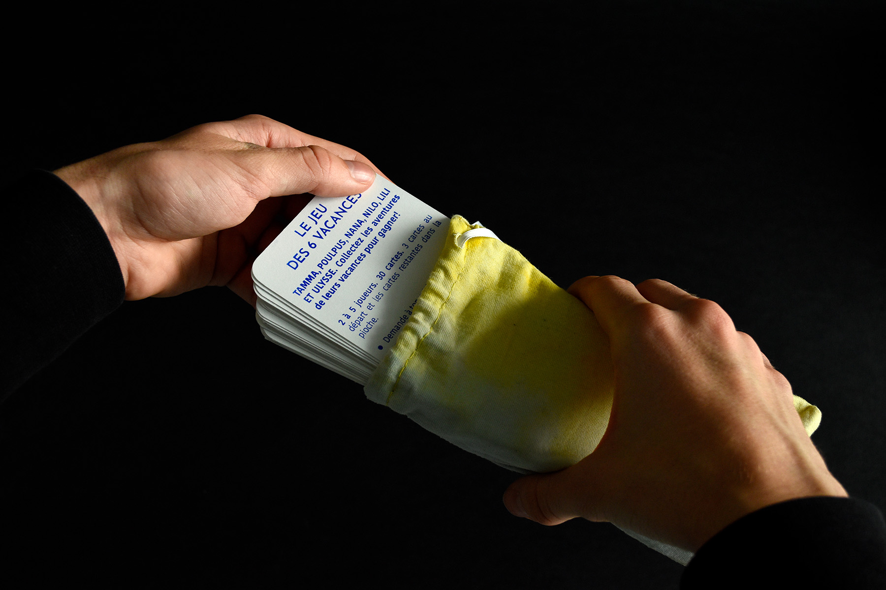
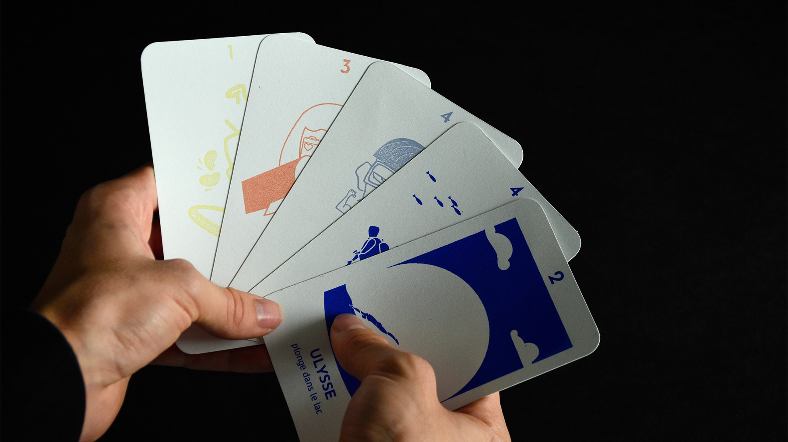
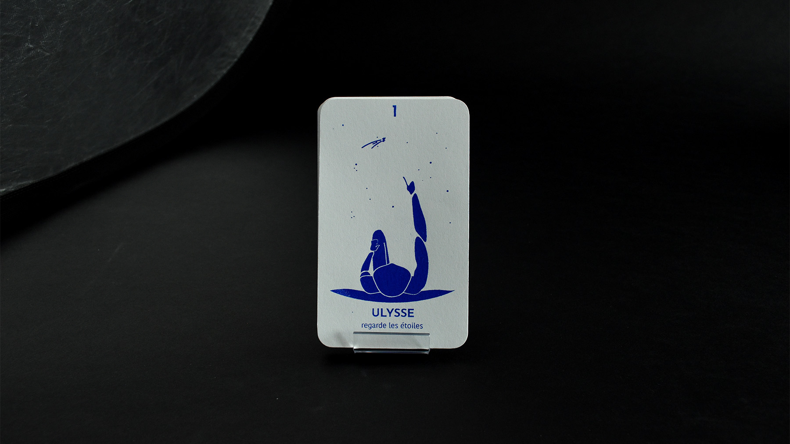
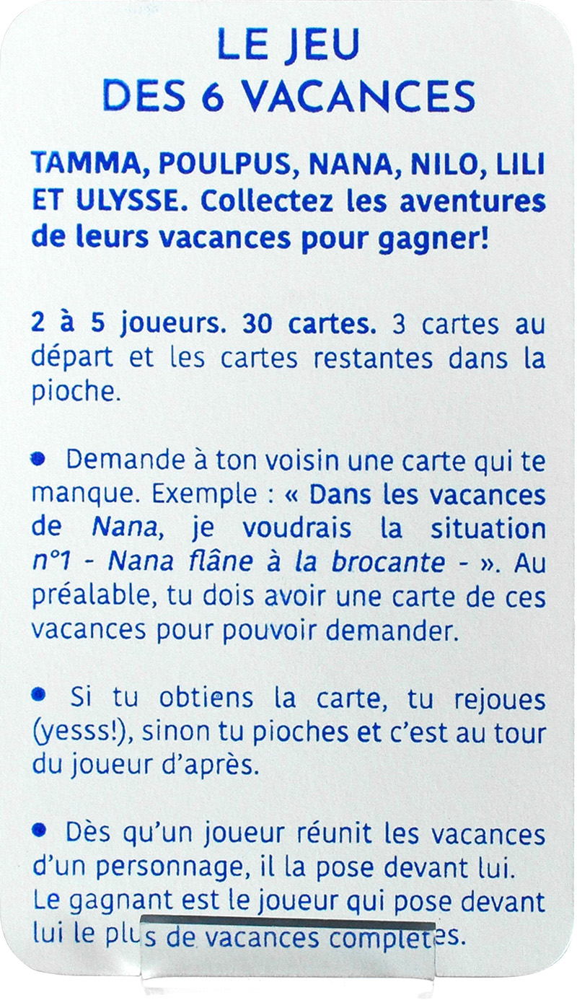

Réalisation collaborative d’un jeux de société sérigraphié avec de l’encre naturelle en collaboration avec RO Studio.
Inspiré du jeux des 7 familles, le jeux des 6 vacances adopte une hiérarchie colorimétrique.
Après avoir expérimenté de multiples recettes végétales (baies, choux rouge) et minérales, j’en ai conclu que la poudre de lapis lazuli serait la plus adéquate pour représenter l’univers aquatique de mon personnage «Ulysse», (célèbre héros de la mythologie grecque).




Une notice synthétique
Un jeux, 6 familles, trois règles, rien de plus.
Inspiré du principe de fonctionnement du jeux des 7 familles. .